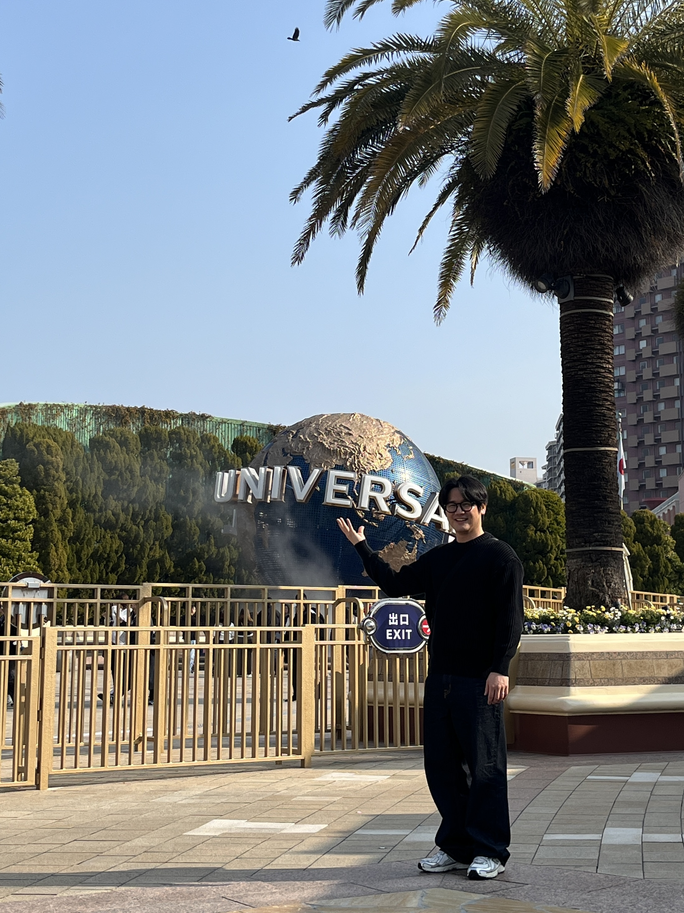

코드로 생각하고, AI로 확장하고, 로봇으로 실현하다
세 가지 핵심 영역을 단계적으로 학습합니다
프로그래밍의 기초 문법부터 데이터 처리까지. 코드로 문제를 해결하는 컴퓨팅 사고력을 기릅니다.
AI의 원리를 이해하고, 직접 이미지 분류 모델을 훈련시킵니다. 나만의 AI를 만들어 봅니다.
아두이노와 센서로 현실 세계와 상호작용하는 시스템을 만듭니다. AI와 로봇을 연결합니다.
SBS 뉴스토리 디테일

전 세계에서 가장 인기 있는 프로그래밍 언어
영어 문장처럼 읽기 쉬운 문법, 풍부한 라이브러리, 거대한 커뮤니티. 초보자부터 전문가까지 모두가 선택하는 언어입니다.
변수, 조건문, 반복문 등 기초 문법을 익히고, 간단한 프로그램을 스스로 작성할 수 있는 수준까지 도달합니다.
데이터를 저장하고 다루는 기본
프로그램의 흐름을 제어하는 핵심
코드를 정리하고 데이터를 관리
AI를 이해하고, 직접 만들어 봅니다
사람처럼 학습하고 판단하는 컴퓨터 기술. 우리가 매일 사용하는 스마트폰, 추천 알고리즘, 번역 서비스에 이미 AI가 적용되어 있습니다.
카메라로 촬영한 이미지를 분석하여 "이것이 무엇인지" 판별하는 기술. Teachable Machine으로 직접 모델을 훈련시킵니다.
카메라로 분류할 대상의 이미지를 촬영합니다
수집한 데이터로 AI를 훈련시킵니다
학습된 모델로 새로운 이미지를 분류합니다
코드가 현실 세계와 만나는 순간
온도, 빛, 거리, 기울기 등 주변 환경을 감지합니다
파이썬/아두이노 코드로 데이터를 분석하고 판단합니다
LED 점등, 모터 회전, 부저 소리 등 물리적으로 반응합니다
전 세계에서 가장 많이 사용되는 오픈소스 마이크로컨트롤러 보드. 다양한 센서와 모터를 연결하여 프로젝트를 만들 수 있습니다.
온도, 빛, 초음파, 적외선 등 다양한 센서로 주변 환경을 감지하고 데이터를 수집합니다.
1학기 학습 로드맵입니다
이론과 실습을 함께, 직접 만들며 배웁니다
기초 문법을 활용한 간단한 프로그램(계산기, 퀴즈 게임, 데이터 분석 등)을 직접 만들어 봅니다.
Teachable Machine으로 이미지 분류 AI를 훈련시키고, 파이썬 코드와 연결하여 실제로 동작하게 합니다.
아두이노와 다양한 센서를 연결하여 환경을 감지하고 반응하는 스마트 시스템을 직접 만들어 봅니다.
다양한 인공지능 도구를 직접 사용해 보고, 각 도구의 특징과 활용법을 탐색합니다.
기술을 '배우는 것'이 아니라, 기술로 '무엇을 할 것인가'를 고민하는 수업
파이썬, AI, 아두이노 등
도구의 사용법을 익힙니다
일상 속에서 기술로
해결할 수 있는 문제를 찾습니다
나만의 아이디어를
기술로 실현합니다
함께 지켜야 할 약속과 평가 방법을 안내합니다
장비와 도구를 안전하게 다루고, 사용 후 정리정돈합니다
팀원과 역할을 나누고, 서로의 아이디어를 존중합니다
실습 과정과 결과를 포트폴리오에 꾸준히 기록합니다
| 평가 항목 | 비율 |
|---|---|
| 📝 시험 | 30% |
| 🧪 프로젝트 1 | 25% |
| 🎯 프로젝트 2 | 25% |
| 🤖 인공지능 포트폴리오 | 20% |
소프트웨어와 하드웨어 도구를 소개합니다
파이썬으로 생각하고, AI로 확장하고, 로봇으로 실현하는 한 학기를 함께해요 🚀
궁금한 점이 있으면 언제든 질문하세요!